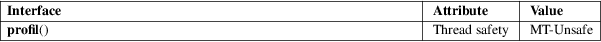

profil − execution time profile
Standard C library (libc, −lc)
#include <unistd.h>
int
profil(unsigned short *buf, size_t
bufsiz,
size_t offset, unsigned int
scale);
Feature Test Macro Requirements for glibc (see feature_test_macros(7)):
profil():
Since glibc 2.21:
_DEFAULT_SOURCE
In glibc 2.19 and 2.20:
_DEFAULT_SOURCE || (_XOPEN_SOURCE && _XOPEN_SOURCE
< 500)
Up to and including glibc 2.19:
_BSD_SOURCE || (_XOPEN_SOURCE && _XOPEN_SOURCE <
500)
This routine provides a means to find out in what areas your program spends most of its time. The argument buf points to bufsiz bytes of core. Every virtual 10 milliseconds, the user’s program counter (PC) is examined: offset is subtracted and the result is multiplied by scale and divided by 65536. If the resulting value is less than bufsiz, then the corresponding entry in buf is incremented. If buf is NULL, profiling is disabled.
Zero is always returned.
For an explanation of the terms used in this section, see attributes(7).

None.
Similar to a call in SVr4.
profil() cannot be used on a program that also uses ITIMER_PROF interval timers (see setitimer(2)).
True kernel profiling provides more accurate results.
gprof(1), sprof(1), setitimer(2), sigaction(2), signal(2)